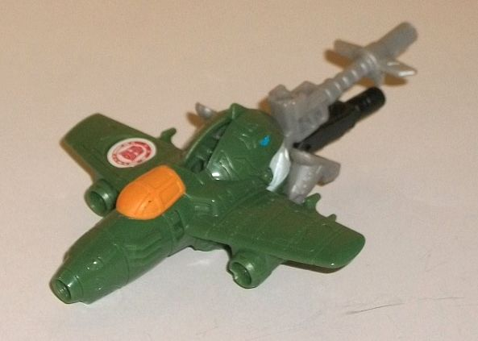
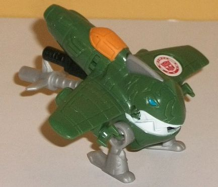
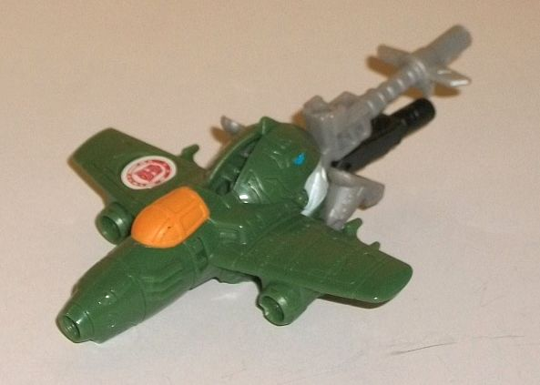
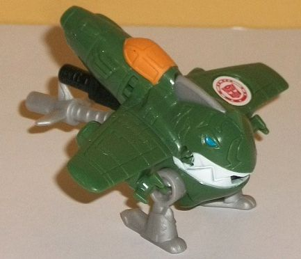
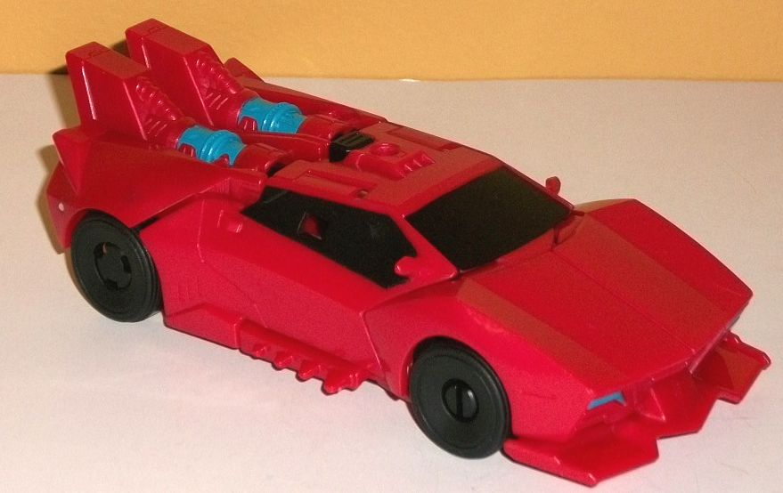
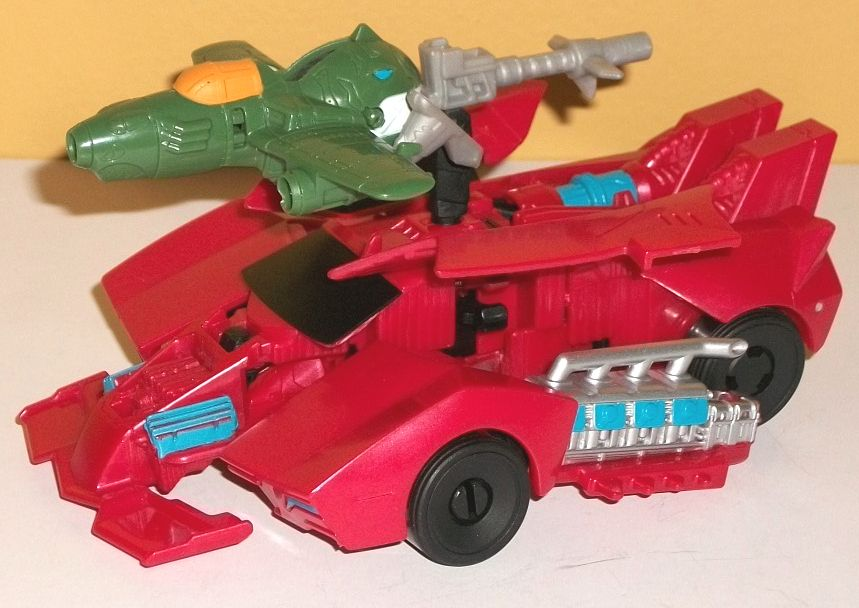
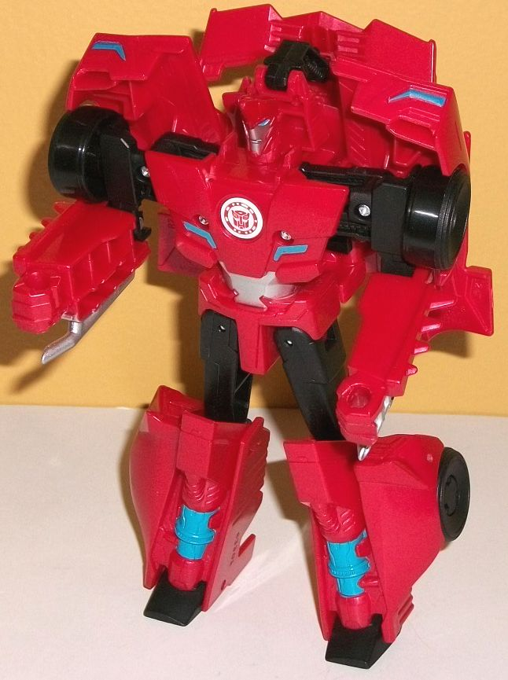

 
Difficulty of Transformation : Very Easy
Color Scheme : Moderately dark military green, light milky gray, and some black, chalky light orange, white, and moderately light blue
Individual Rating: 4.3
Allegiances
: Autobot
 Great
Byte
Great
Byte


Difficulty of Transformation
: Very
Easy
Color Scheme
: Moderately dark military
green, light milky gray, and some black, chalky light orange, white, and
moderately light blue
Individual Rating:
4.3
(NOTE: Because this is a repaint, this is not a full-blown review. This mainly covers any changes made to the mold and the color scheme, and merely compares it to the original RID2015 Sawtooth. For a review on the mold itself, read the review of the original RID2015 Sawtooth toy here .)
It's debatable
whether Great Byte counts as a remold of Sawtooth or whether he counts
as a full-blown new toy given how much of him is different, but for the
sake of this review I'll be treating him as a remold, given how similar
the engineering is. The body for Great Byte is entirely new-- along with
the black peg, allowing him to activate Sideswipe's Activator gimmick;
he only retains the main handle, the feet, and some internal mechanisms
in terms of what he actually shares with Sawtooth. However, the transformation
is almost entirely the same, and the look is so similar that it's difficult
to see it as an entirely new toy. Great Byte's plane mode has a great "old-timey"
look to it, with lots of little rivets detailed on the paneled wings, an
old-style cockpit, and an old-style nosecone that looks like it's missing
a front propeller (though it's not). There's also little engine details
along the sides, and the engines underneath his wings turn into the claws
of his robot mode, which is a nice touch. But MAN, the rest of the jet
mode looks AWFUL, as there's just a bunch of robot mode junk for the back
half-- the head that makes up the back end of the jet isn't really hidden
all that well, and the legs just hang behind the wings while the various
pegs just hang out WAY back there and really ruin this mode, which is a
shame as the front section looks great. Great Byte transforms in the same
manner as Sawtooth, just moving his handles forward underneath the nosecone.
Here the Sawtooth base for the mold is particularly obvious, as it looks
basically the same in terms of proportions, just instead of having manta
ray-like details he has a jet behind his head and arms. The head even looks
very nearly the same, with the same large toothy grin, small narrowed eyes,
and the like, though some additional angular details have been added to
the top half of his face this time around. The arms, sadly, can't move
at all on this version, which is a real shame, though the legs can still
move back-and-forth. The color scheme of a fairly dark military green is
a fitting main color, though I wish he had less of that blah light milky
gray plastic on his handle and legs. The black for one of his handles looks
okay. The white on the teeth, light orange on the jet cockpit, and moderately
light blue on the eyes goes decently with the dark green, but they're used
so little they don't contribute much to the overall color scheme.
 Sideswipe
Sideswipe



Difficulty of Transformation
: Easy
Color Scheme
: Moderately dark milky
red, black, and some moderately light blue and silver
Individual Rating
: 7.5
Sideswipe's vehicle mode
is largely the same as most of his other RID2015 toys, with the most obvious
change being the back end; instead of having a relatively flat back end
with a spoiler, there's now two large angular bumps on the back (which
rather obviously become his knees in robot mode) and light blue rotary
engines exposed, giving a bit of a "taste" of what's to come when he's
in Activator mode. On the back end, there's some "thruster vents" molded
into the rear of those knee spikes, as well as "power tubes" connecting
them with the light blue parts, but much of the actual back end is just
Sideswipe's knees folded up, sadly. (The taillights are molded-in, but
they're smaller than normal and shunted to the sides a bit too much.) On
the roof there's a small port for an Activator Mini-Con to plug in, or
you can just push the black button behind it to activate his Activator
mode. Other than that, the rest of Sideswipe looks like how'd you'd expect
it; the proportions are largely spot-on, with the front bumper being perhaps
a bit larger than normal but just barely. The angular grill details and
headlights are there, as well as the small spikes below the car doors,
as well as small molded-in handles and rear view mirrors. By far the most
common color in this mode is Sideswipe's usual dark milky red, with black
plastic on the wheels and black paint on the windows. Beyond the aforementioned
light blue on the exposed engines, there's also light blue on the headlights,
but that's it for this mode-- he really needed another couple of paint
apps to help break up all the red, but unfortunately this is the case with
most RID2015 Sideswipe toys.
Pushing in an Activator
(or simply pressing the black button behind it) does quite the transform
to Sideswipe's vehicle mode. The doors lift up like wings, while the entire
front/side halves angle out nad back. The end result makes it look like
Sideswipe is ready for super turbo-speed-- he's even got an F1-racer-style
fin on the front end now. There's lots of engine and vent-like details
on his front exposed section, with the vents painted a light blue. Admittedly
the front halves of the hood sliding back and to the sides look a bit odd,
but I LOVE the exposed exhaust pipe and engine details behind them-- they're
pretty intricately-detailed, and are painted mostly silver with a couple
of light blue spots. It's a really cool "turbo" detail.
The transformation from
Sideswipe to robot mode is pretty simple (though you have to have activated
his Activator gimmick to begin the process). After that, just fold out
and down the legs from the back end and flip out the feet, then flip back
the front fin onto Sideswipe's upper back and stand him up-- congrats,
you're done. This is definitely Sideswipe's weakest mode, as there's quite
a bit of kibble. His car door sections are splayed out behind his back,
and that aforementioned fin also just sticks off his upper back, along
with the central section of his car mode. The halves of the front hood
also poke up above his shoulders, when RID2015 Sideswipe's always his wheels
as the top of his shoulders. It adds a lot of unnecessary bulk to him and
really ruins his sleek look that he achieves in his vehicle modes-- a particularly
big deal when it comes to Sideswipe, who's the speedster of the team. That
said, his legs look pretty good with the exposed engine detailing, and
the exhaust pipe/engine sections under his lower arms are small enough
where I don't mind them. (Heck, it's easy to visualize the exhaust pipes
like wrist-mounted flamethrowers.) He's got his usual flattened faux car-front
details on his chest, and his headsculpt is spot-on with his usual "punk
hairdo", though proportionally it's a bit small due to his transformation
and gimmicks. His hands and spike details are also sculpted into lower
arms nicely enoug. For added paint apps in this mode, his faux headlights
on his chest and eyes are light blue, while his face and stomach are painted
silver. With the addition of more black, it makes his color scheme more
varied than in his normal vehicle mode, though a few additional paint apsp
on his arms or legs still would've been appreciated. Unfortunately, as
with basically every Activator, his articulation is very limited, unnecessarily
so for the size-- he can move at head, forwards at the elbows, side-to-side
slightly at the hips, back at the knees, and slightly back at the ankles.
Given how all of this articulation is limited even at those points (except
for the head and maybe elbows if you want to be generous), this means he's
a bit of brick.
The Sideswipe/Great Byte
set is about middle-of-the-road as far as the Activator Combiner sets go.
Great Byte is just a really poor re-use of the Sawtooth design and doesn't
make for a good plane at all. Sideswipe has a nice vehicle mode and a pretty
darned cool Activator mode, but he pays for it with a LOT of kibble in
his robot mode. I also continue to dislike how unnecessarily the articulation
is limited on these toys, given their size. Mildly recommended if you like
the concept of Activator Combiners.
Reviews by Beastbot